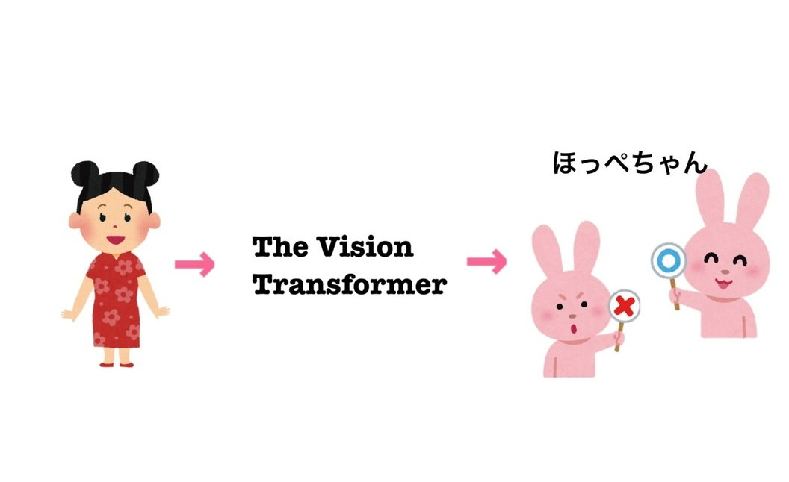
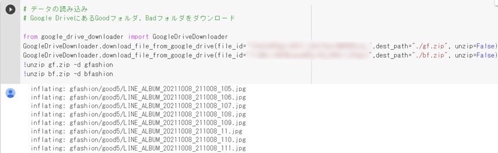
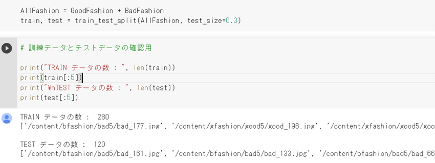
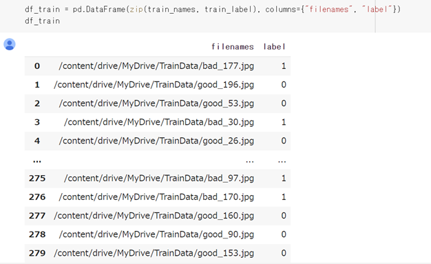
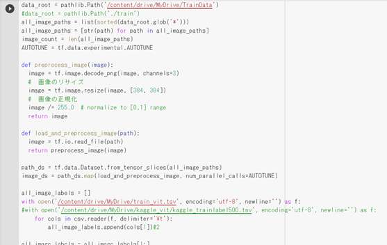
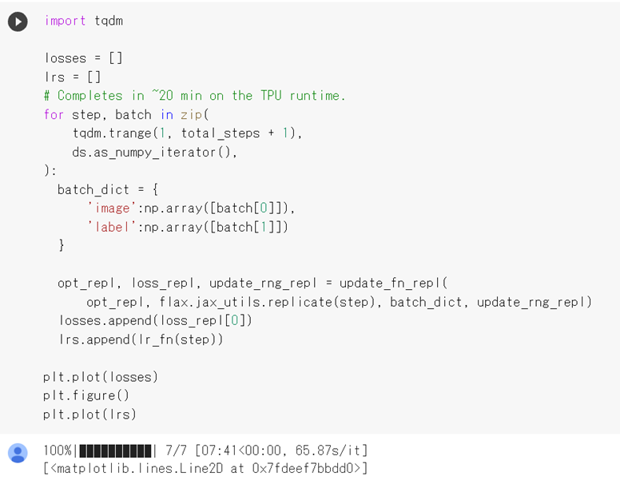
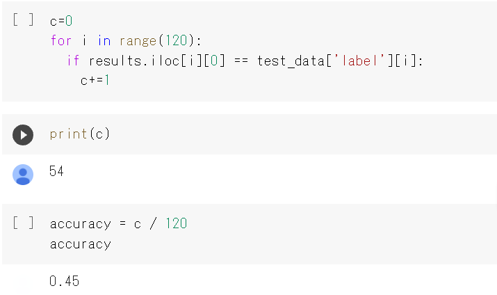
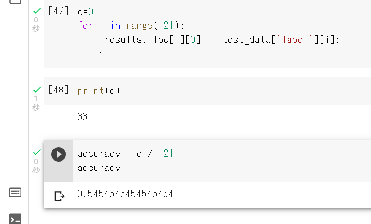

実験概要
私たちは、街行く人のコーディネートについて話すことがあり、Vision Transformerを用いて私たちのセンスを学習した機械学習モデル「ほっぺちゃん」を作ろうと考えました。
ほっぺちゃんは服装の画像を取り込むと、それがおしゃれかどうかを判別してくれる仕組みになっています。
【イメージ図】

まず初めにおしゃれだと思う人のコーデとおしゃれではないと思う人のコーデの写真をそれぞれ200枚集め、Vision Transformerに学習させます。（自分たちの主観が入ってしまうことは否めませんが…）そして、そのデータをもとに自分たちのコーデを評価してもらうという仕組みです。
①画像データの取り込み
画像データを読み込み、おしゃれな画像のフォルダ名をgoodに、おしゃれでない画像のフォルダ名はbadに変更しました。

②すべての画像データをTestデータとTrainデータに分類
GoodもBadもまとめたリストAllFashionを作成し、訓練データとテストデータに分類しました。

③画像にラベル付け
読み込んだGoodとBadの画像データにラベルを付けました。
訓練データとテストデータ両方においてGoodは０、Badは１で登録しました。

④画像の正規化
今回のVision Transformerを使った画像処理では画像のサイズがすべて同じであることが好ましいので、画像サイズを変更し統一させました。

⑤データの学習
取り込んだ画像をおしゃれなコーデとおしゃれではないコーデとで分類できるよう学習させました。

⑥テスト
テストデータをロードし、テストデータの画像分類を行いました。結果はCSVに格納しました。

結果は、正答率が45％と半分以下になってしまいました。
どうしてこのような低い値になってしまったかを考えた結果、実験者4人で各々に画像を集めたことにより一貫性がなかったことがあげられました。
そこで今度は、おしゃれな服装とそうでない服装の基準を決めました。
おしゃれな服装はシンプル(モノトーン、色の統一性がある、柄がない)なもので統一し、そうでない服装は派手な色また派手な柄のものに統一しました。
⑦テスト(２回目)
新たに集めた画像を取り込み、1回目と同様に学習させました。

結果は、正答率が54％となり1回目よりも精度が上がりました。
まとめ
1回目の実験ではモデルの正答率が45%という結果となりました。あまり良い結果が出なかった原因として、メンバー4人がそれぞれデータを集めたので、おしゃれだと思う服装とおしゃれではないと思う服装に一貫性がなかったことが挙げられました。2回目の実験では、メンバー4人で意見を合わせて画像を選びなおし、正答率を54%まで上げることに成功しました。
それぞれの価値観があるため、人間でさえファッションを確実に評価することは出来ません。その事を踏まえて今回の結果を鑑みると、"ほっぺちゃん"が54%の正答率を出せたことは妥当な数値なのではないかと思いました。しかし、まだまだ精度を上げることが出来るはずです。
さらに精度を上げるためには、画像数を増やしていくことが改善策の一つだと考えます。